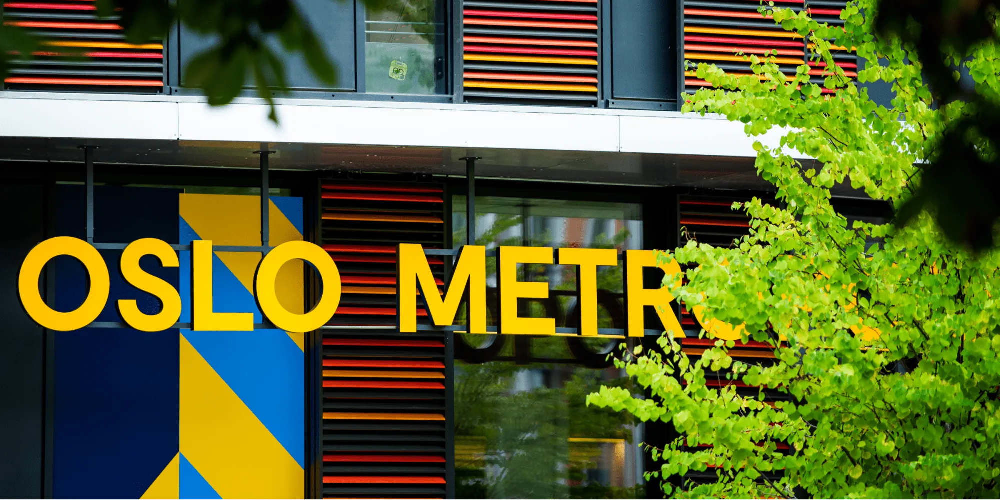

Forside
OsloMet
Oslo Metropolitan Unversity, også kjent som OsloMet, er et universitet med campus på Kjeller og Pilestredet i sentrum av Oslo. Et av hovedbyggene til Pilestredet-campuset er P35, hvor man finner både universitetets eget makerspace, kantine, bibliotek og mye mer.
Om dette nettstedet
Nettstedet er delt inn i fire sider, som kan nås via menyen øverst på hver av sidene eller via linkene under. Her er en kort oppsummering av hva du finner på de ulike sidene:
-
Forside
Forsiden er index.html – siden du ser på nå. -
Tilgjengelighet
Tilgjengelighet-siden svarer på «accessibility»-delen av oppgaven. -
Emneside
Denne siden svarer på «topical»-delen av oppgaven. Den inneholder en beskrivelse av sekundære personas til et oppdiktet produkt fra faget ADST1600, gruppe 15. Siden demonstrerer bruk av grid-layout med to kolonner. -
Makerspace
Dette er en tilleggsside med valgfritt innhold. Emnet er OsloMet Makerspace, men siden inneholder også en del dummy-tekst for illustrasjonsformål. Her har vi valgt å eksperimentere med en ekstra sidemeny som ruller sammen med siden og kan brukes til å hoppe til forskjellige deler av innholdet.
Alle sidene har for øvrig felles tema med samme header og footer. Footeren inneholder for det meste dummy-informasjon.